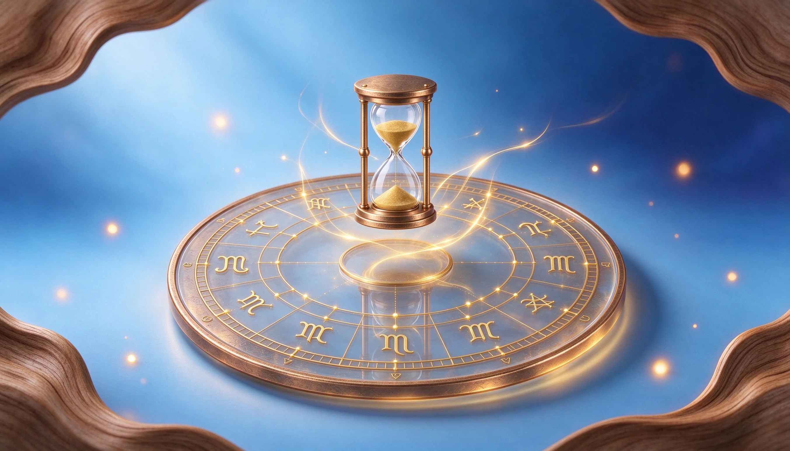
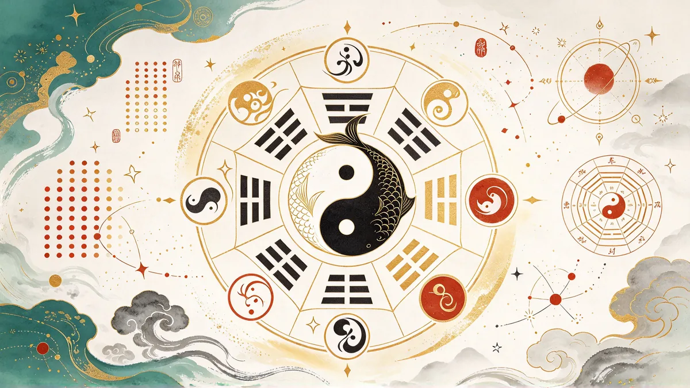
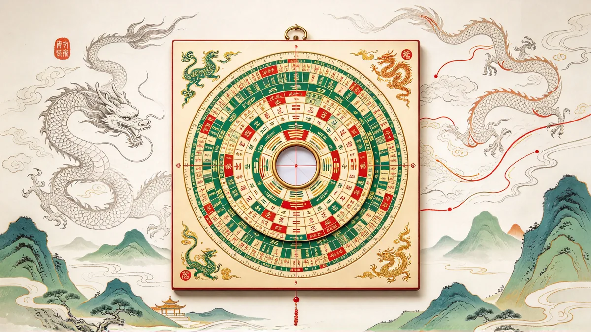
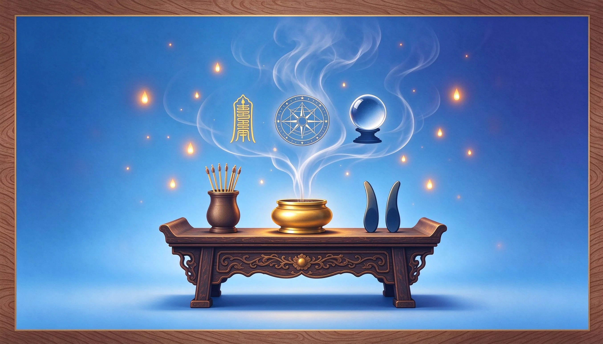

十二星座今日整體／愛情／事業運勢與幸運指數，依今日星象即時呈現。
22 張大阿爾克那＋56 張小阿爾克那，支援三牌陣、凱爾特十字與每日一牌互動抽牌。
認識你的能量類型、策略與九大能量中心，輸入出生資料即可繪製專屬能量藍圖。
集中管理你收藏的星座、塔羅與文章，快速回到關注的內容。
以天地人三才為軸，融通東方命理、易經卦象與西方塔羅占星，為你觀照人生脈動、指引前行方向。這裡是每個人認識自己、安頓身心的星學之境。
念十回 の 星靈宇宙融通東西兩大命理傳統。點擊任一體系，認識其原理並連結對應專業主題。